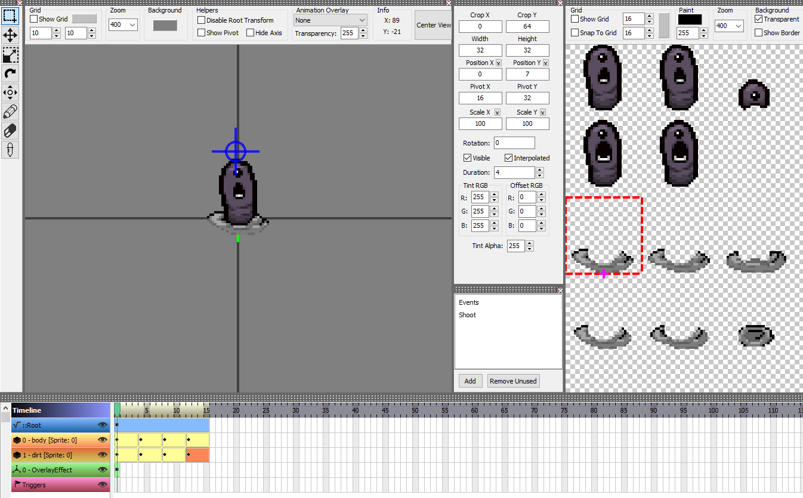

Dirt color
Author(s): catinsuranceTags:
Dirt color is the the system which enables a layer in an enemy's .anm2 to be colored differenlty depending on the color of the ground under it. This is how enemies like Nightcrawlers are able to blend in with the environment. Dirt color is only configured to work automatically for EntityNPCs and EntityFamiliars. This tutorial will focus on an enemy, but the process is the exact same for familiars.
Making a dirt layer⚓︎
In the .anm2 of your enemy, create a layer named dirt. This layer should have the part of your spritesheet that should be colored depending on the environment. Make sure that the pixels you want to be differenly colored are different shades of gray, with the lightness depending on how dark you want the color to be.

As long as the layer is named dirt, it will automatically be updated.
Manually grabbing dirt color⚓︎
Sometimes, you want to grab the dirt color at a certain position so that you can use it yourself, instead of having it apply automatically to an NPC. There is no built-in functionality to do this, but one hack you can do is spawn the DIRT_PILE (146) EntityEffect and store its Color property, as this effect is hardcoded to automatically change its color to the dirt color of the position it was spawned in.
1 2 3 4 5 6 | |